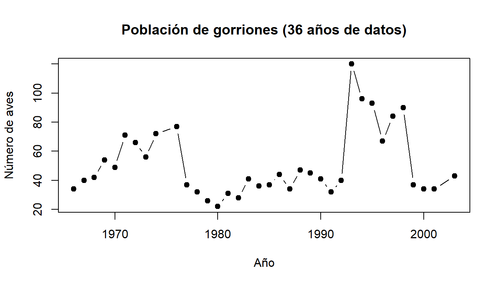
Crecimiento logístico: cuando la densidad frena el crecimiento
1. Una pregunta
En la hoya de Loja, una población de Cedrela montana ha sido monitoreada durante 20 años. Al principio, la población crecía rápidamente: de 10 árboles a 100 en pocos años. Pero luego el crecimiento se desaceleró. Después de 15 años, la población se estabilizó en alrededor de 200 árboles, y ya no creció más.
Pregunta: ¿por qué la población dejó de crecer? ¿Qué la está limitando?
A primera vista, el modelo geométrico o exponencial predecirían que la población seguiría creciendo indefinidamente. Pero en la realidad, algo la frena. En esta lectura veremos por qué el modelo denso-independiente no siempre funciona, y cómo el modelo logístico describe el crecimiento cuando la densidad importa.
2. ¿Por qué el modelo denso-independiente falla?
Para entender por qué necesitamos un modelo denso-dependiente, veamos un caso real. En un estudio clásico de gorriones (Passer domesticus) en Estados Unidos, se monitoreó una población durante 36 años. Los datos muestran que la población no crece indefinidamente: crece hasta cierto nivel, luego decrece, y forma ciclos.
Pregunta: ¿qué pasaría si ajustáramos un modelo geométrico a los primeros 7 años de datos y proyectáramos?
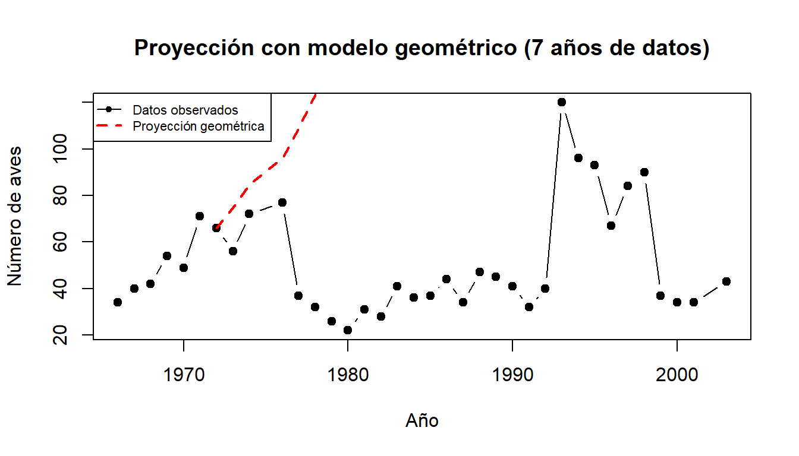
Conclusión: el modelo geométrico se aleja de lo que sucede en realidad. La población no crece indefinidamente: hay factores que la regulan. Esos factores son denso-dependientes.
NoteLa lección
Antes de modelar, siempre hay que mirar los datos. Si la población se estabiliza, fluctúa alrededor de un valor, o forma ciclos, el modelo denso-independiente no es adecuado. Necesitamos un modelo que incluya la denso-dependencia.
3. ¿Qué es la denso-dependencia?
La denso-dependencia es el efecto que tiene el tamaño de la población sobre su propia tasa de crecimiento. A medida que la población crece:
- Los recursos (alimento, espacio, luz) se vuelven limitantes.
- La competencia intraespecífica aumenta.
- La acumulación de desechos o parásitos puede reducir la supervivencia.
- La depredación puede aumentar.
Consecuencia: la tasa de crecimiento disminuye a medida que la población se acerca a su límite.
Los ecólogos consideran que la denso-dependencia negativa es una característica de una población bajo competencia intraespecífica: los individuos de la misma especie compiten por recursos escasos compartidos.
4. Derivación del modelo discreto denso-dependiente
El modelo geométrico que vimos en la lectura 2.1–2.2 asume que la población crece indefinidamente. Ahora vamos a modificarlo para incorporar la denso-dependencia. Lo hacemos en versión discreta porque es la que se usa para poblaciones con reproducción estacional (como muchas especies de Loja).
4.1 Del modelo geométrico al denso-dependiente
Partamos del modelo geométrico:
\[N_{t+1} = \lambda N_t\]
Podemos descomponer \(\lambda\) en dos partes: \(\lambda = 1 + R_d\), donde \(R_d\) es el factor de crecimiento discreto. Entonces:
\[N_{t+1} = \lambda N_t = N_t(1 + R_d) = N_t + R_d N_t\]
La tasa de incremento es igual a \(N_t\) (el tamaño previo) más el cambio proporcional \(R_d N_t\).
4.2 El efecto de la densidad
La denso-dependencia plantea que cada individuo ejerce un pequeño efecto negativo sobre la tasa de crecimiento. Ese efecto es siempre el mismo, independiente del tamaño poblacional, y lo representamos con una constante \(\alpha\).
Si multiplicamos \(\alpha\) por el tamaño poblacional \(N_t\) (\(\alpha N_t\)), obtenemos el efecto negativo total de los individuos sobre el crecimiento.
Una forma conveniente de implementar este efecto es multiplicar \(R_d\) por un factor de escalamiento. Ese factor debe cumplir dos requisitos:
- Ser igual a 1 cuando \(N = 0\) (para que \(R_d \times 1 = R_d\)).
- Ser igual a 0 cuando la población es tan grande que el incremento per cápita es cero.
El factor que cumple estos requisitos es:
\[\text{Incremento per cápita} = r_d(1 - \alpha N_t)\]
Donde \(\alpha\) es el efecto negativo per cápita de un individuo en el incremento per cápita de la población.
4.3 ¿Dónde se detiene el crecimiento?
Para conocer el valor de \(N\) donde el crecimiento per cápita es cero, resolvemos:
\[0 = r_d(1 - \alpha N_t)\] \[0 = r_d - r_d \alpha N_t\] \[N_t = \frac{1}{\alpha}\]
Cuando la población alcanza \(N = 1/\alpha\), el incremento es cero y la población deja de crecer. Ese valor es la capacidad de carga \(K\):
\[K = \frac{1}{\alpha}\]
4.4 La ecuación discreta
Sustituyendo \(1/\alpha\) por \(K\), la ecuación de crecimiento queda:
\[N_{t+1} = N_t + r_d \left(1 - \frac{N_t}{K}\right) N_t\]
Esta es la versión discreta del modelo logístico. Es equivalente al modelo continuo (que veremos después), pero para poblaciones con reproducción estacional.
4.5 Simulación del modelo discreto
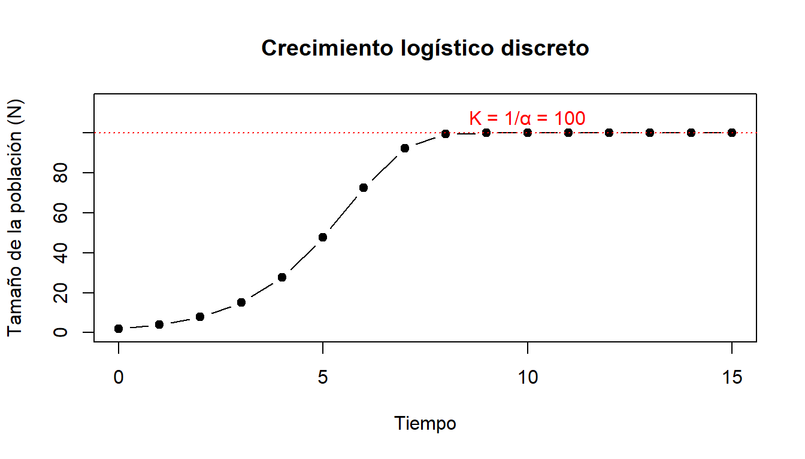
También podemos ver cómo cambia el incremento total y el incremento per cápita con el tamaño poblacional:
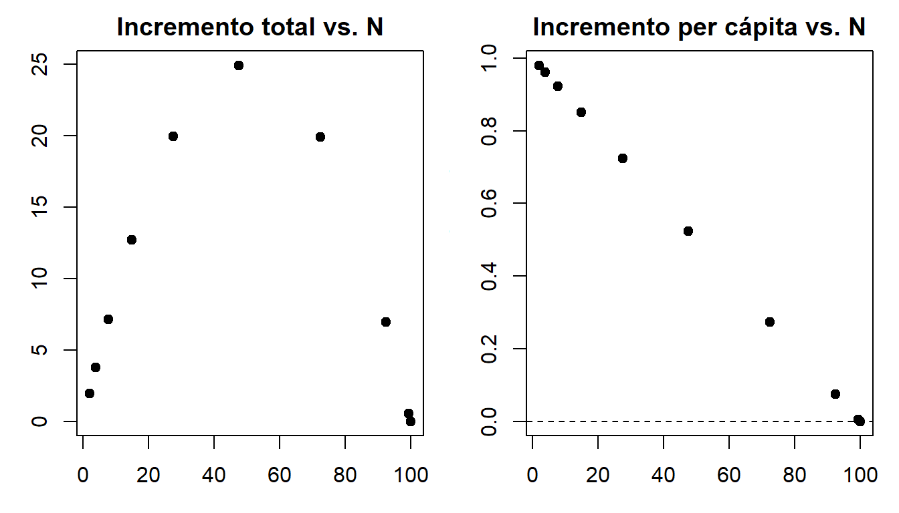
NoteInterpretación
- El incremento total es máximo en \(N = K/2\) (punto de inflexión).
- El incremento per cápita disminuye linealmente con \(N\): a mayor densidad, menor crecimiento por individuo.
5. ¿Cómo estimar \(\alpha\) y \(K\) a partir de datos?
Ahora que tenemos el modelo, la pregunta es: ¿cómo obtenemos \(\alpha\) y \(K\) de datos reales? Hay dos formas: gráfica y analítica.
5.1 Estimación gráfica
La forma más sencilla es graficar el incremento per cápita (\(\lambda_t = N_{t+1}/N_t\)) contra la densidad (\(N_t\)). Si la relación es lineal y negativa, podemos ajustar una regresión:
\[\lambda_t = 1 + r_d - r_d \alpha N_t\]
O, equivalentemente:
\[\lambda_t = a + b N_t\]
Donde:
- \(a = 1 + r_d\) (intercepto)
- \(b = -r_d \alpha\) (pendiente)
A partir de la regresión, podemos obtener:
- \(r_d = a - 1\)
- \(\alpha = -b / r_d = -b / (a - 1)\)
- \(K = 1/\alpha\)
Ejemplo numérico: supongamos que tenemos estos datos de una población de Cedrela montana:
| Año | \(N_t\) | \(N_{t+1}\) | \(\lambda_t = N_{t+1}/N_t\) |
|---|---|---|---|
| 1 | 10 | 20 | 2,00 |
| 2 | 20 | 36 | 1,80 |
| 3 | 36 | 61 | 1,69 |
| 4 | 61 | 95 | 1,56 |
| 5 | 95 | 133 | 1,40 |
| 6 | 133 | 166 | 1,25 |
| 7 | 166 | 187 | 1,13 |
| 8 | 187 | 196 | 1,05 |
Si graficamos \(\lambda_t\) contra \(N_t\), vemos una relación lineal negativa:
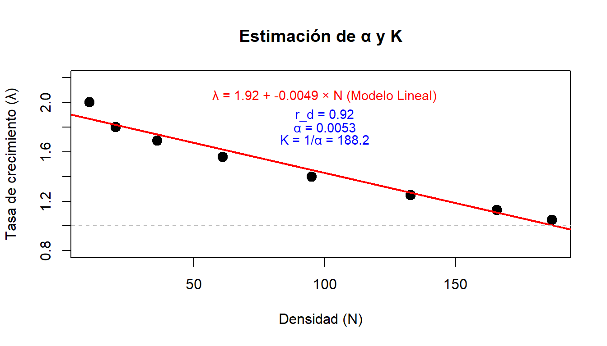
Interpretación:
- El intercepto (\(a\)) es aproximadamente 2,1, así que \(r_d \approx 1,1\).
- La pendiente (\(b\)) es aproximadamente -0,0055, así que \(\alpha \approx 0,005\).
- \(K = 1/\alpha \approx 200\) árboles.
TipPaso 1 para el estudiante
Con los datos de la tabla, ajusten una regresión lineal de \(\lambda_t\) contra \(N_t\).
Reporten:
1. El intercepto y la pendiente.
2. El valor de \(r_d\).
3. El valor de \(\alpha\). 4. El valor de \(K\).
5.2 Estimación analítica
También se puede estimar \(\alpha\) y \(K\) directamente de la ecuación logística, si se conocen dos puntos de la curva. Pero el método gráfico es más intuitivo y más usado en la práctica.
5.3 ¿Qué pasa si los datos no son lineales?
Si la relación entre \(\lambda_t\) y \(N_t\) no es lineal, el modelo logístico simple no es adecuado. En ese caso, pueden usarse modelos más complejos (por ejemplo, con denso-dependencia no lineal o con efecto Allee).
NoteLimitación importante
El método gráfico asume que la relación es lineal y que no hay retrasos temporales. En la realidad, la denso-dependencia puede ser no lineal, y los efectos pueden tardar en manifestarse. Por eso, siempre hay que evaluar el ajuste del modelo a los datos.
6. El modelo logístico continuo
Ahora que entendemos la versión discreta, veamos la versión continua, que es más conocida en la literatura.
6.1 La ecuación
El modelo logístico continuo se escribe así:
\[\frac{dN}{dt} = r \cdot N \cdot \left(1 - \frac{N}{K}\right)\]
Donde:
- \(N\) = tamaño de la población
- \(r\) = tasa intrínseca de crecimiento (equivalente a \(r_d\) en el modelo discreto)
- \(K\) = capacidad de carga (equivalente a \(1/\alpha\))
- \(\frac{dN}{dt}\) = tasa de cambio de la población en el tiempo
Interpretación:
- Cuando \(N\) es pequeño, \(\left(1 - \frac{N}{K}\right) \approx 1\), y el crecimiento es casi exponencial.
- Cuando \(N\) se acerca a \(K\), \(\left(1 - \frac{N}{K}\right) \approx 0\), y el crecimiento se frena.
- Cuando \(N = K\), el crecimiento es cero: la población se estabiliza.
6.2 La curva sigmoidea
La solución de la ecuación logística es una curva sigmoidea (forma de S):
\[N_t = \frac{K}{1 + \left(\frac{K - N_0}{N_0}\right) \cdot e^{-rt}}\]
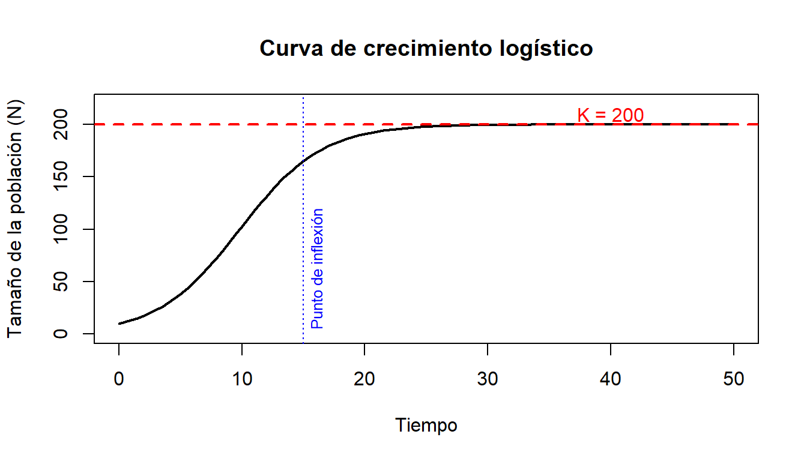
La curva tiene tres fases:
- Fase de crecimiento exponencial: al principio, cuando \(N\) es pequeño, la población crece rápidamente.
- Punto de inflexión: en \(N = K/2\), la tasa de crecimiento es máxima. Después de este punto, el crecimiento se desacelera.
- Fase de estabilización: cuando \(N\) se acerca a \(K\), el crecimiento se detiene.
NoteEl punto de inflexión
El punto de inflexión ocurre cuando \(N = K/2\). En ese punto, la tasa de crecimiento (\(\frac{dN}{dt}\)) es máxima. Antes de ese punto, el crecimiento se acelera; después, se desacelera.
6.3 Efecto de \(r\) y \(K\)
- \(r\) controla la velocidad con la que la población se acerca a \(K\).
- \(K\) controla el tamaño máximo que la población puede alcanzar.
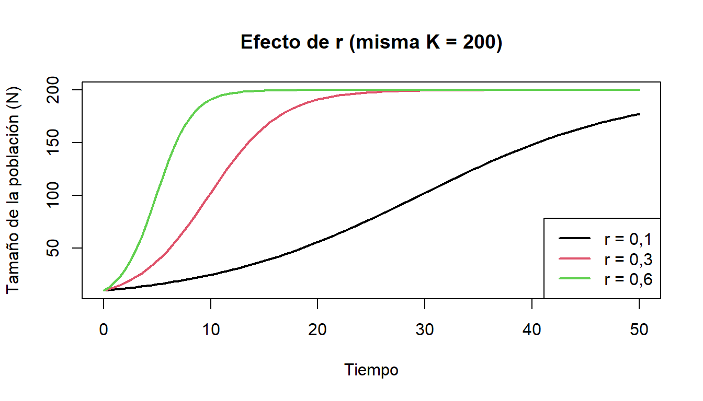
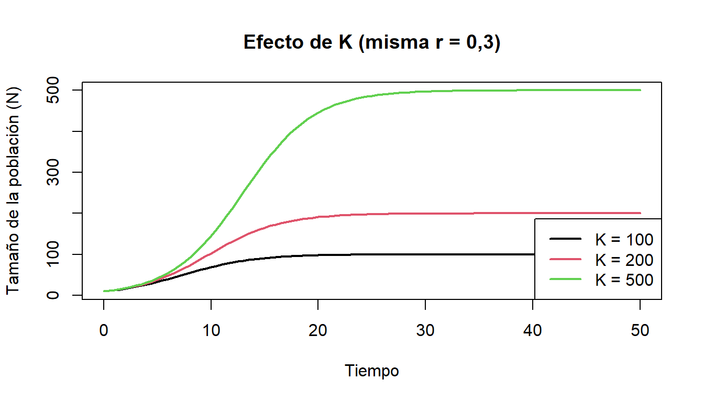
7. Efecto del tamaño inicial, de \(\alpha\) y de \(r_d\)
7.1 Efecto del tamaño inicial
El tamaño inicial afecta la velocidad con la que la población se acerca a \(K\), pero no el valor final. \(K\) funciona como un atractor: tanto si la población empieza por debajo como por encima de \(K\), tiende a \(K\).
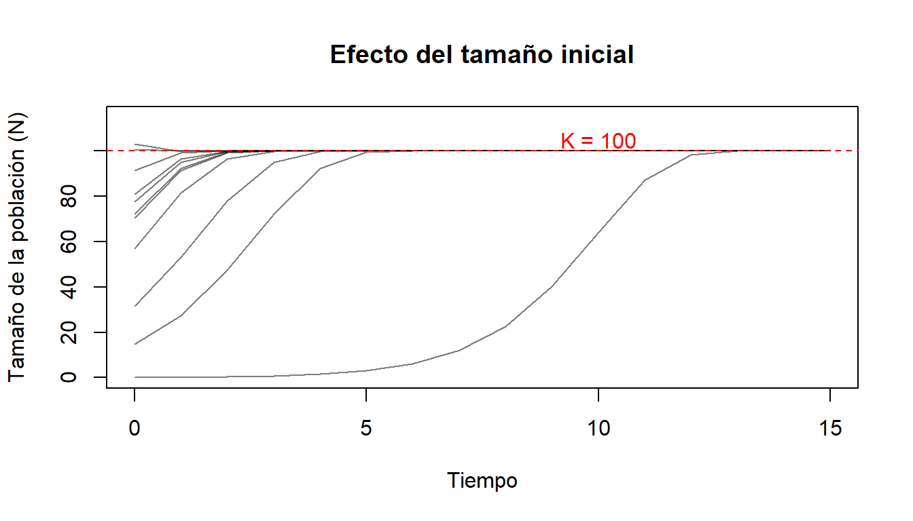
TipPaso 2 para el estudiante
Con \(K = 100\), si la población empieza en \(N_0 = 5\) o en \(N_0 = 150\), ¿llega al mismo valor final? ¿Por qué?
7.2 Efecto de \(\alpha\)
\(\alpha\) determina el tamaño final de la población: a menor \(\alpha\) (menor efecto negativo por individuo), mayor \(K\).
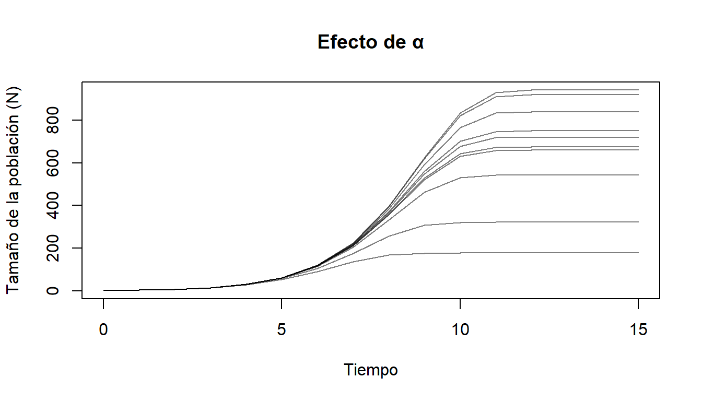
7.3 Efecto de \(r_d\)
\(r_d\) controla la velocidad con la que la población se acerca a \(K\), pero no el valor final. Sin embargo, cuando \(r_d\) es muy alto, aparecen dinámicas complejas: ciclos y caos.
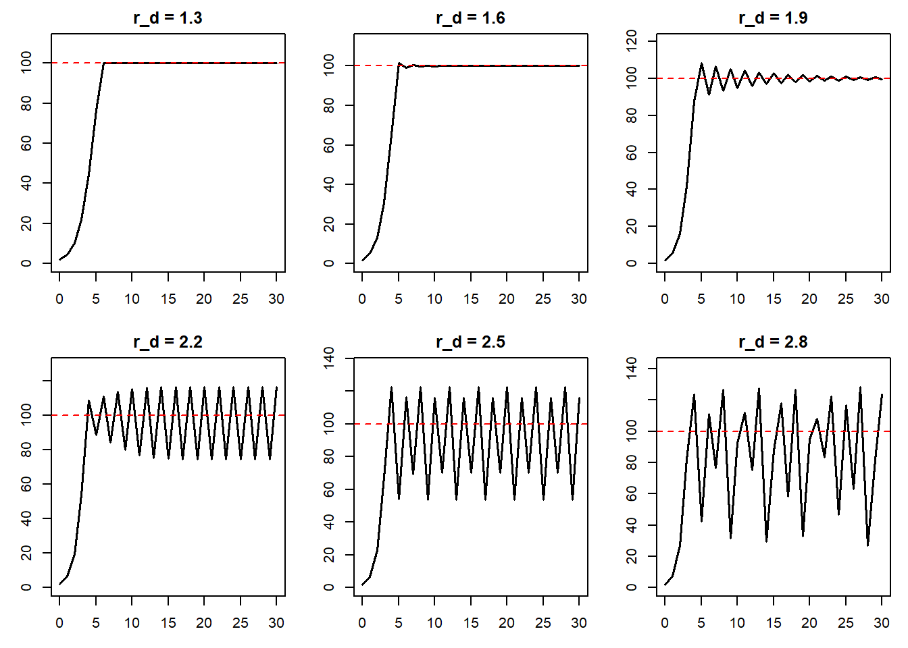
8. Dinámicas complejas: ciclos y caos
Cuando \(r_d\) es bajo, la población se aproxima suavemente a \(K\). Pero cuando \(r_d\) aumenta, aparecen dinámicas sorprendentes:
- \(r_d\) bajo (1,3): la población crece gradualmente hacia \(K\) y se queda allí.
- \(r_d\) intermedio (1,6–1,9): la población sobrepasa \(K\) un poco, creando oscilaciones amortiguadas.
- \(r_d = 2,0\)–\(2,449\): la población forma ciclos límite de dos puntos. Estos dos puntos son atractores estables: independientemente de donde empiece la población, termina oscilando entre los mismos dos valores.
- \(r_d = 2,5\): el ciclo se duplica a cuatro puntos.
- \(r_d > 2,57\): aparece el caos. La trayectoria es fluctuante, no periódica, pero acotada, y sensible a las condiciones iniciales.
Note¿Qué es el caos?
El caos es una trayectoria fluctuante no determinista, que está acotada y es sensible a las condiciones iniciales. Dos poblaciones que empiezan con tamaños ligeramente distintos pueden divergir completamente con el tiempo, aunque el modelo sea determinista.
NoteLa contribución de Robert May
Robert May demostró por primera vez ciclos límite estables y caos utilizando este modelo, en la década de 1970. Su trabajo pionero, realizado con una calculadora de mano, mostró cómo dinámicas aparentemente aleatorias surgen de reglas deterministas muy simples. Hizo que los biólogos de población se preguntaran si la predicción era posible.
¿Existe una interpretación biológica de estas fluctuaciones?
Considera un ambiente sencillo donde pequeños animales herbívoros con altas tasas reproductivas comen casi toda la vegetación en un año. Al año siguiente, la vegetación no se ha recuperado, pero la población animal sigue siendo alta. Así, la alta tasa de crecimiento provoca una desconexión entre el tamaño actual de la población y los efectos negativos de esos individuos: los efectos negativos (consumo de recursos) los sienten los descendientes, no los individuos que los causaron. Es un retraso temporal incorporado en el modelo discreto.
TipPaso 3 para el estudiante
Con \(r_d = 2,5\), ¿qué tipo de dinámica observas? ¿Y con \(r_d = 2,8\)? ¿Qué implicaciones tiene esto para la predicción de poblaciones?
9. ¿Cómo decidir entre un modelo denso-independiente y uno denso-dependiente?
Antes de ajustar un modelo, hay que decidir cuál usar. Aquí hay una guía práctica:
9.1 Mira los datos primero
- Si la población crece indefinidamente (o decrece) sin estabilizarse: el modelo denso-independiente puede ser adecuado, al menos a corto plazo.
- Si la población se estabiliza, fluctúa alrededor de un valor, o forma ciclos: el modelo denso-dependiente es más adecuado.
9.2 Prueba estadística
Puedes evaluar si la tasa de crecimiento per cápita (\(r_t\) o \(\lambda_t\)) depende de la densidad:
- Calcula \(\lambda_t\) para cada intervalo.
- Grafica \(\lambda_t\) contra \(N_t\).
- Si hay una relación negativa significativa (por ejemplo, con una regresión), hay evidencia de denso-dependencia.
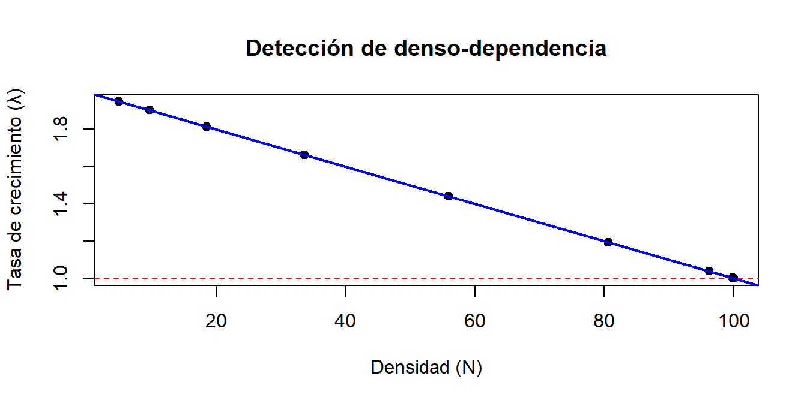
9.3 Considera la biología de la especie
- Especies con competencia intraespecífica fuerte (árboles, aves territoriales): probablemente denso-dependientes.
- Especies con recursos ilimitados (colonizadoras tempranas, insectos en ambientes temporales): pueden ser denso-independientes a corto plazo.
- Especies con efecto Allee (dependen de la cooperación): denso-dependientes con retroalimentación positiva.
9.4 Considera el objetivo del modelo
- Si quieres predecir a corto plazo y la población está lejos de \(K\): el modelo denso-independiente puede ser suficiente.
- Si quieres predecir a largo plazo o evaluar la sostenibilidad: necesitas un modelo denso-dependiente.
- Si quieres evaluar el riesgo de extinción: necesitas un modelo con denso-dependencia y estocasticidad.
NoteRegla práctica
Si los datos muestran que la población se estabiliza o fluctúa alrededor de un valor, usa un modelo denso-dependiente. Si no tienes suficientes datos para detectar denso-dependencia, usa el denso-independiente como aproximación, pero discute sus limitaciones.
10. ¿Es factible simular con el modelo logístico?
Sí, es factible y muy útil. Las simulaciones con el modelo logístico permiten:
10.1 Simulaciones deterministas
Con los parámetros \(r\) y \(K\) fijos, puedes proyectar la población a futuro. Eso permite:
- Estimar cuánto tiempo tarda una población en recuperarse después de una perturbación.
- Comparar escenarios con distintos valores de \(r\) o \(K\).
- Identificar el punto de inflexión y la tasa máxima de crecimiento.
10.2 Simulaciones estocásticas
Puedes incorporar variación en \(r\) o en \(K\):
- Variación en \(r\): simula años buenos y malos, y evalúa cómo varía la trayectoria.
- Variación en \(K\): simula cambios en la capacidad de carga (por ejemplo, por cambio climático o pérdida de hábitat).
- Catástrofes: simula eventos extremos (incendios, sequías) que reducen la población abruptamente.
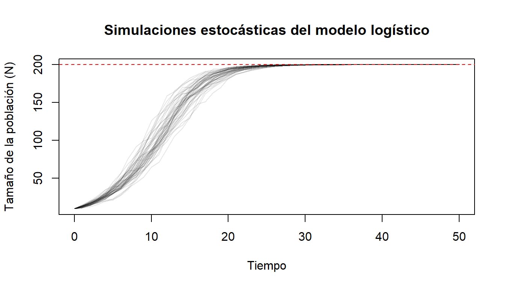
NoteAplicación en conservación
Las simulaciones del modelo logístico son muy útiles para:
- Estimar la población mínima viable (PMV) con denso-dependencia.
- Evaluar el efecto de la pérdida de hábitat (que reduce \(K\)).
- Comparar estrategias de manejo (por ejemplo, reducir la mortalidad vs. aumentar \(K\)).
TipPaso 4 para el estudiante
Simula una población con \(K = 200\) y \(r = 0,3\), pero con un evento catastrófico en el año 20 que reduce la población a la mitad. ¿Cuánto tarda en recuperarse? ¿Qué pasa si \(K\) se reduce a 100 después de la catástrofe?
11. Aplicación local: Cedrela montana en la hoya de Loja
Cedrela montana es un árbol maderable que crece en los bosques montanos de la hoya de Loja. Su población está limitada por:
- Competencia por luz: los árboles jóvenes necesitan luz para crecer, pero los adultos les hacen sombra.
- Competencia por nutrientes: el suelo tiene una capacidad limitada de nutrientes.
- Tala selectiva: reduce la población y puede alterar la capacidad de carga.
Pregunta ecológica: ¿cuál es la capacidad de carga de Cedrela montana en un fragmento de bosque de la hoya de Loja? ¿Cómo cambia con la tala?
Ejemplo hipotético: si un fragmento de bosque puede sostener 200 árboles de Cedrela (K = 200), pero la tala reduce la población a 50, la población podría recuperarse si se detiene la tala. Pero si la tala reduce K a 100, la población se estabilizará en 100, no en 200.
Conexión con la conservación: el modelo logístico permite estimar cuánto tiempo tarda una población en recuperarse después de una perturbación, y qué nivel de tala es sostenible.
12. Síntesis y puente
El modelo logístico describe el crecimiento denso-dependiente:
\[\frac{dN}{dt} = r \cdot N \cdot \left(1 - \frac{N}{K}\right)\]
La población sigue una curva sigmoidea: crece rápidamente al principio, se desacelera en el punto de inflexión (\(N = K/2\)), y se estabiliza en la capacidad de carga (\(K\)).
En su versión discreta, el modelo se escribe:
\[N_{t+1} = N_t + r_d \left(1 - \frac{N_t}{K}\right) N_t\]
Donde \(K = 1/\alpha\) y \(\alpha\) es el efecto negativo per cápita de un individuo.
Cuando \(r_d\) es muy alto, aparecen ciclos límite y caos, lo que hace que la predicción a largo plazo sea imposible.
¿Cómo decidir entre denso-independiente y denso-dependiente? Mira los datos: si la población se estabiliza o fluctúa alrededor de un valor, usa el denso-dependiente. Si no tienes suficientes datos, usa el denso-independiente como aproximación, pero discute sus limitaciones.
¿Es factible simular? Sí, tanto con modelos deterministas como estocásticos. Las simulaciones permiten evaluar escenarios, estimar la PMV y comparar estrategias de manejo.
Pregunta final: ¿qué especie de Loja conoce que esté limitada por la densidad? ¿Cómo estimarían su capacidad de carga?
13. Para profundizar
- Gotelli, N. J. (2008). A Primer of Ecology. 4th ed. Sinauer. Capítulo 2.
- Begon, M., Harper, J. L., & Townsend, C. R. (2006). Ecology: From Individuals to Ecosystems. Blackwell. Capítulo 6.
- May, R. M. (1976). Simple mathematical models with very complicated dynamics. Nature, 261, 459–467.
14. Preguntas de comprensión
- ¿Por qué el modelo geométrico falla cuando la población se estabiliza?
- ¿Qué es la denso-dependencia? Da un ejemplo local.
- ¿Qué representa \(K\) en el modelo logístico?
- ¿Qué es el punto de inflexión y por qué es importante?
- ¿Cómo cambia la curva si \(r\) aumenta? ¿Y si \(K\) aumenta?
- Deriva la ecuación discreta del modelo logístico a partir del modelo geométrico.
- ¿Qué es el efecto Allee? Da un ejemplo.
- ¿Qué son los ciclos límite y el caos? ¿Cuándo aparecen?
- ¿Cómo decidirías entre un modelo denso-independiente y uno denso-dependiente?
- ¿Es factible simular con el modelo logístico? ¿Qué aplicaciones tiene?
- ¿Qué limitaciones tiene el modelo logístico? Menciona al menos tres.
- ¿Cómo se relaciona el modelo logístico con la conservación de Cedrela montana en la hoya de Loja?